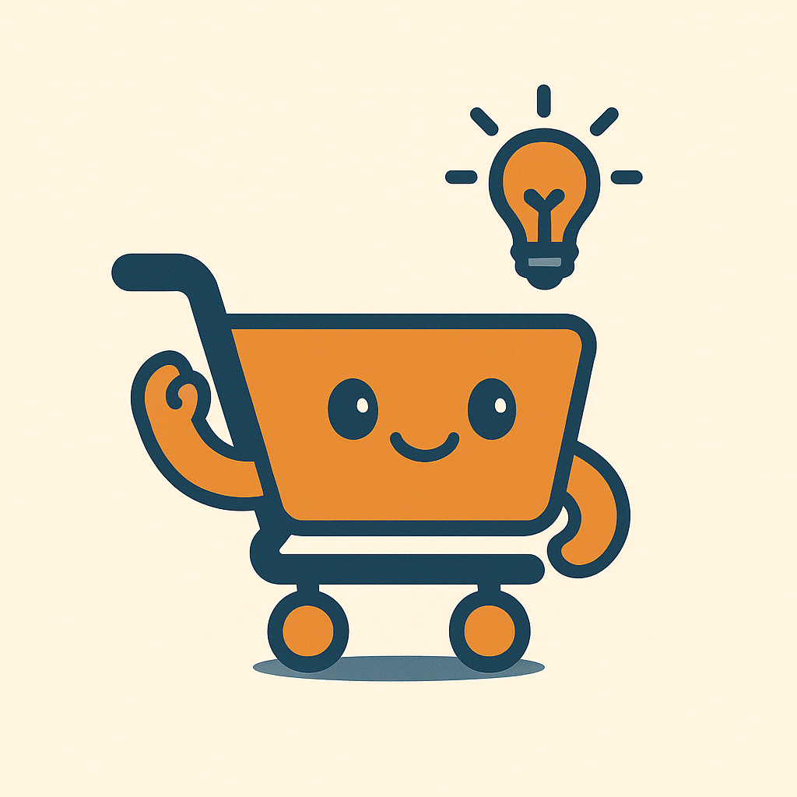

Mis Listas

Aún no tienes listas de compras.
{{ lista.name }}
Desliza izquierda para borrar
Ideas para cocinar
Buscando ingredientes...
Buscando recetas...
Aún no tienes listas de compras.
Desliza izquierda para borrar
Buscando ingredientes...
Buscando recetas...